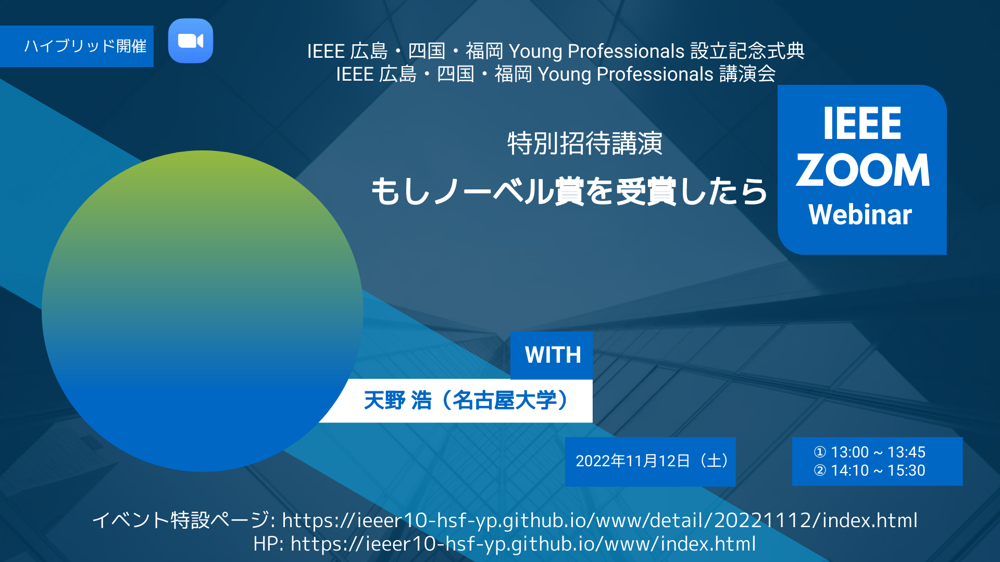

Activities: 活動予定および報告
2023年

|
【主催】 IEEE名古屋支部YP, IEEE関西支部YP
【共催】 豊田自動織機, IEEE Japan Council
2023年04月22日(土) 14:10～15:30
開催予定/ナゴヤ イノベーターズ ガレージ/オンライン |

|
【共同主催】 IEEE仙台支部YP
2023年3月11日(土) 15:00～19:30
開催地/広島市立大学サテライトキャンパス/オンライン(Microsoft Teams) |
2022年

|
【共催】 ：IEEE広島支部，IEEE四国支部，IEEE福岡支部，IEEE四国・福岡・広島WIE，IEEE Japan Council Educational Activities (EA) Group，広島市立大学
【後援】 IEEE EA 広島，IEEE EA 四国，IEEE EA 福岡
2022年11月12日(土) 13:00～13:45
開催地/広島市立大学/オンライン(Zoom Webinar) |
|  |
【共同主催】 広島市立大学
【共催】 IEEE広島支部，IEEE四国支部，IEEE福岡支部，IEEE四国・福岡・広島WIE，IEEE Japan Council Educational Activities (EA) Group
【後援】 IEEE EA 広島，IEEE EA 四国，IEEE EA 福岡，広島 市教育委員会，広島県教育委員会
2022年11月12日(土) 14:10～15:30
開催地/広島市立大学/オンライン(Zoom Webinar) |

|
2022年10月08日（土）14:00 〜 17:00
開催地/酒造 ナルトタイの店， 徳島市 |
|
|
2022年5月7日(土)
|